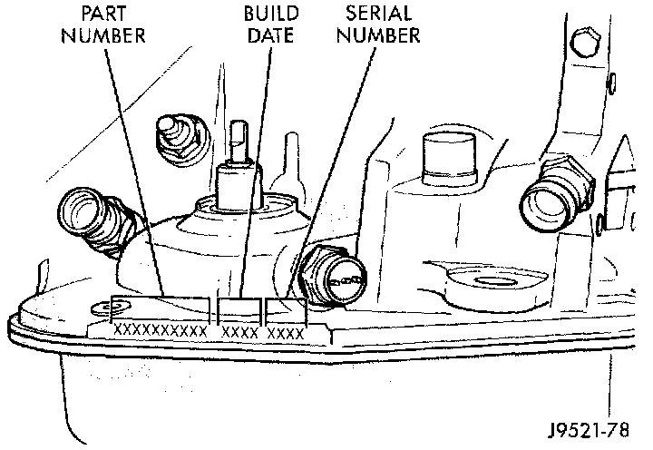

Transmission ID
TRANSMISSION IDAutomatic - - 42/44RE
Fig. 2 Transmission Part & Serial Number Location:

Transmission identification numbers are stamped on the left side of the case just above the oil pan gasket surface. Refer to this information when ordering replacement parts.